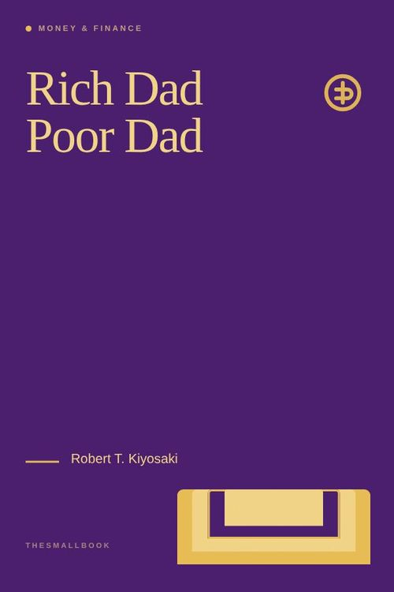

Library › Ask the Library › How do I get out of debt?
How do I get out of debt?
The short answer
Debt is an emergency brake on your wealth train. Pay the highest-rate debt first with every extra rupee, track every outflow, and never add new debt while clearing old.
The books behind the answer

Your Money or Your Life
Vicki Robin & Joe Dominguez · 1992 · 8 min · 6 lessons
Money is life energy. Every rupee you spend is hours of your life - spend accordingly.
- Track Every Rupee: You can't fix money you refuse to look at. Track every rupee for 30 days, the leaks become visible.
- Frugality Is Elegant, Not Miserly: Cut with joy, not misery, every expense you drop buys back hours of your life.

Rich Dad Poor Dad
Robert T. Kiyosaki · 1997 · 12 min · 9 lessons
The rich don't work for money - they make money work for them. The difference is financial education.
- Know the Difference: Assets vs. Liabilities: The EMI car is a liability, it takes money out every month. Debt is buying liabilities with future income.

The Psychology of Money
Morgan Housel · 2020 · 11 min · 8 lessons
Doing well with money is a soft skill: how you behave beats what you know. Every time.
- Room for Error: Leave room for error in every money plan. The margin is what keeps one bad month from becoming a crisis.
A failure that proves it
Why did Compaq & DEC fail?
1998 · BUSINESS · Loss: The minicomputer empire
Kingfisher borrowed to fly higher and higher until the debt itself grounded the airline. Leverage is a loan on your future, respect it.
The toy that hooks amateurs today eats the professional market tomorrow. When you catch yourself saying 'that's not a real X' - that's the disruption announcing itself.
Also asked in Hindi and Hinglish
People also ask this as: karz kaise chukaye, loan se kaise niklein, EMI ka bojh kaise kam karein. The answer on this page stays in simple English, and the live book can be read in Hindi or Hinglish.
Questions people ask next
Can I read this in Hindi?
Yes. This answer is written in simple English. Open any linked book and choose Hindi or Hinglish to read the full lessons in your language, with audio where available.